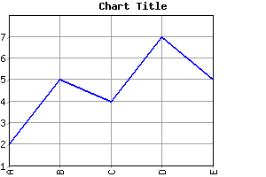

This allows you to generate charts from either static HTML pages, or
from any web development environment, such as PHP (http://www.php.net/),
or from shell or perl CGI scripts, etc.
To produce a chart, you build a URL using the "owtchart" CGI path, and you add chart parameters in the QUERY_STIRNG part of the URL. See section 5 (below) for the list of chart parameters.
OK, this probably was not very clear... the best way to learn how to use the OWTChart engine is probably to look at some examples.
The following examples assume that the "owtchart" application is installed and is accessible at the URL "http://www.host.addr/cgi-bin/owtchart".
Let's start with a simple line chart:
http://www.host.addr/cgi-bin/owtchart?Type=Line&W=300&H=200&NumSets=1&NumPts=5&Vals=2!5!4!7!5And add a Title and labels along the X axis:

http://www.host.addr/cgi-bin/owtchart?Type=Line&W=300&H=200&NumSets=1&NumPts=5&Vals=2!5!4!7!5&Title=Chart+Title&XLabels=A;B;C;D;ENow, turn it into a 3D bar chart:
http://www.host.addr/cgi-bin/owtchart?Type=3DBar&W=300&H=200&NumSets=1&NumPts=5&Vals=2!5!4!7!5&Title=Chart+Title&XLabels=A;B;C;D;EAnd finally, add 1more set of bars, drawn in red, besides each other:
http://www.host.addr/cgi-bin/owtchart?Type=3DBar&W=300&H=200&NumSets=2&NumPts=5&Vals=2!5!4!7!5!1!4!3!3!4&Title=Chart+Title&XLabels=A;B;C;D;E&SetColors=0000FF!FF0000&StackType=Beside
Any other character must be escaped, the most frequent case is spaces that have to be converted to "+" characters, see RFC2396 for more details on the escaping of URLs.
Malformed URLs may work on some systems, but may not on others... it
really depends on the HTTP server you are running, it has nothing to do
with the OWT chart engine itself.
Let's reuse the examples from section 3.2 above and look at the input files that would produce the same charts:
A simple line chart:
Type=LineAdd a Title and labels along the X axis:
W=300
H=200
NumSets=1
NumPts=5
Vals=2!5!4!7!5
Type=LineTurn it into a 3D bar chart:
W=300
H=200
NumSets=1
NumPts=5
Vals=2!5!4!7!5
Title=Chart Title
XLabels=A;B;C;D;E
Type=3DBarAdd 1 more set of bars, drawn in red, besides each other:
W=300
H=200
NumSets=1
NumPts=5
Vals=2!5!4!7!5
Title=Chart Title
XLabels=A;B;C;D;E
Type=3DBar
W=300
H=200
NumSets=2
NumPts=5
Vals=2!5!4!7!5!1!4!3!3!4
Title=Chart Title
XLabels=A;B;C;D;E
SetColors=0000FF!FF0000
StackType=Beside
Note: Parameter Names and Values are not case sensitive.
|
|